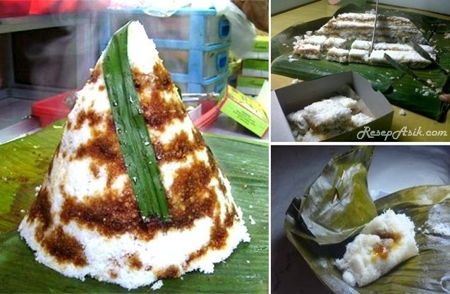

|
Awug adalah satu dari sekian banyak penganan khas masyarakat Sunda atau Jawa Barat. Diolah dari tepung beras (paré) yang dicampur dengan air, garam, gula merah dan kelapa parut serta dimasak dengan cara dikukus.
Akan tetapi, dikukus dengan perabot dapur beranyam bambu bernama aseupan, awug menjadi makanan khas. |
 |
| (Sumber: jadesta.kemenparekraf.go.id) |